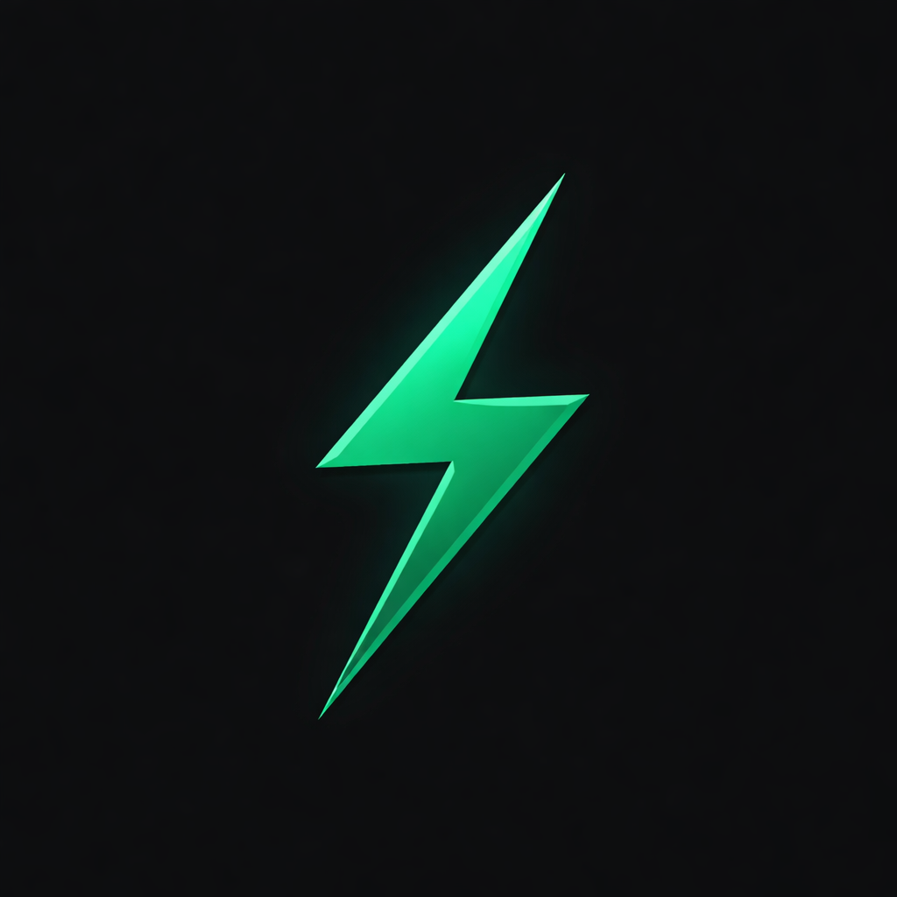

Zeusian Chrome Extension
Read the current page and turn it into an AI summary.
Account
Sign in once, summarize every page.
Zeusian will read the active tab, extract the main content, and prepare an AI summary automatically.
Current page
Live page snapshot
AI summary